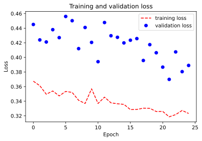
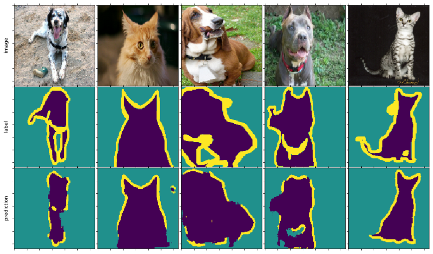

Oxford-iiit-pet (tensorflow)¶
import os
os.environ['TF_FORCE_GPU_ALLOW_GROWTH'] = 'true'
import tensorflow as tf
import numpy as np
import matplotlib.pyplot as plt
%matplotlib inline
from dOD.tf_model.model import UNet
from dOD.tf_model.datasets import oxford_iiit
from dOD.tf_model.trainer import Trainer
H, W = oxford_iiit.IMAGE_SIZE
train_ds, test_ds = oxford_iiit.load_data()
modelMaker = UNet(input_shape=(H, W, oxford_iiit.CHANNELS), kernel_shape=(3, 3), nlayer=2,
root_feature=64, depth=5, padding='same', activation='relu',
drop_rate=0.5, num_classes=oxford_iiit.CLASSES)
modelMaker.build_net()
modelMaker.compile(learning_rate=1e-3,
loss=tf.keras.losses.SparseCategoricalCrossentropy(),
metrics=['sparse_categorical_crossentropy', 'sparse_categorical_accuracy'])
modelMaker.describle()
-------- input shape: (None, 128, 128, 3)
> layer 0 shape: (None, 128, 128, 64)
> layer 1 shape: (None, 128, 128, 64)
downstream layer 1 shape: (None, 128, 128, 64)
> layer 0 shape: (None, 64, 64, 128)
> layer 1 shape: (None, 64, 64, 128)
downstream layer 2 shape: (None, 64, 64, 128)
> layer 0 shape: (None, 32, 32, 256)
> layer 1 shape: (None, 32, 32, 256)
downstream layer 3 shape: (None, 32, 32, 256)
> layer 0 shape: (None, 16, 16, 512)
> layer 1 shape: (None, 16, 16, 512)
downstream layer 4 shape: (None, 16, 16, 512)
> layer 0 shape: (None, 8, 8, 1024)
> layer 1 shape: (None, 8, 8, 1024)
bottom layer 5 shape: (None, 8, 8, 1024)
> layer 0 shape: (None, 16, 16, 512)
> layer 1 shape: (None, 16, 16, 512)
upstream layer 4 shape: (None, 16, 16, 512)
> layer 0 shape: (None, 32, 32, 256)
> layer 1 shape: (None, 32, 32, 256)
upstream layer 3 shape: (None, 32, 32, 256)
> layer 0 shape: (None, 64, 64, 128)
> layer 1 shape: (None, 64, 64, 128)
upstream layer 2 shape: (None, 64, 64, 128)
> layer 0 shape: (None, 128, 128, 64)
> layer 1 shape: (None, 128, 128, 64)
upstream layer 1 shape: (None, 128, 128, 64)
-------- output shape: (None, 128, 128, 3)
T = Trainer(logbase='./logs/oxford')
hisotry = T.fit(modelMaker.net, train_ds, validation_dataset=test_ds, epochs=25, batch_size=32)
Epoch 1/25
2/115 [..............................] - ETA: 1:48 - loss: 0.3751 - sparse_categorical_crossentropy: 0.3751 - sparse_categorical_accuracy: 0.8553WARNING:tensorflow:Callbacks method `on_train_batch_end` is slow compared to the batch time (batch time: 0.4798s vs `on_train_batch_end` time: 0.7489s). Check your callbacks.
WARNING:tensorflow:Callbacks method `on_train_batch_end` is slow compared to the batch time (batch time: 0.4798s vs `on_train_batch_end` time: 0.7489s). Check your callbacks.
115/115 [==============================] - 171s 1s/step - loss: 0.3674 - sparse_categorical_crossentropy: 0.3674 - sparse_categorical_accuracy: 0.8535 - val_loss: 0.4451 - val_sparse_categorical_crossentropy: 0.4451 - val_sparse_categorical_accuracy: 0.8291
Epoch 2/25
115/115 [==============================] - 171s 1s/step - loss: 0.3613 - sparse_categorical_crossentropy: 0.3613 - sparse_categorical_accuracy: 0.8558 - val_loss: 0.4239 - val_sparse_categorical_crossentropy: 0.4239 - val_sparse_categorical_accuracy: 0.8327
Epoch 3/25
115/115 [==============================] - 171s 1s/step - loss: 0.3496 - sparse_categorical_crossentropy: 0.3496 - sparse_categorical_accuracy: 0.8612 - val_loss: 0.4211 - val_sparse_categorical_crossentropy: 0.4211 - val_sparse_categorical_accuracy: 0.8348
Epoch 4/25
115/115 [==============================] - 170s 1s/step - loss: 0.3540 - sparse_categorical_crossentropy: 0.3540 - sparse_categorical_accuracy: 0.8587 - val_loss: 0.4380 - val_sparse_categorical_crossentropy: 0.4380 - val_sparse_categorical_accuracy: 0.8270
Epoch 5/25
115/115 [==============================] - 169s 1s/step - loss: 0.3473 - sparse_categorical_crossentropy: 0.3473 - sparse_categorical_accuracy: 0.8608 - val_loss: 0.4271 - val_sparse_categorical_crossentropy: 0.4271 - val_sparse_categorical_accuracy: 0.8354
Epoch 6/25
115/115 [==============================] - 170s 1s/step - loss: 0.3534 - sparse_categorical_crossentropy: 0.3534 - sparse_categorical_accuracy: 0.8585 - val_loss: 0.4561 - val_sparse_categorical_crossentropy: 0.4561 - val_sparse_categorical_accuracy: 0.8241
Epoch 7/25
115/115 [==============================] - 170s 1s/step - loss: 0.3520 - sparse_categorical_crossentropy: 0.3520 - sparse_categorical_accuracy: 0.8593 - val_loss: 0.4502 - val_sparse_categorical_crossentropy: 0.4502 - val_sparse_categorical_accuracy: 0.8249
Epoch 8/25
115/115 [==============================] - 171s 1s/step - loss: 0.3412 - sparse_categorical_crossentropy: 0.3412 - sparse_categorical_accuracy: 0.8629 - val_loss: 0.4120 - val_sparse_categorical_crossentropy: 0.4120 - val_sparse_categorical_accuracy: 0.8384
Epoch 9/25
115/115 [==============================] - 169s 1s/step - loss: 0.3369 - sparse_categorical_crossentropy: 0.3369 - sparse_categorical_accuracy: 0.8648 - val_loss: 0.4410 - val_sparse_categorical_crossentropy: 0.4410 - val_sparse_categorical_accuracy: 0.8306
Epoch 10/25
115/115 [==============================] - 145s 1s/step - loss: 0.3570 - sparse_categorical_crossentropy: 0.3570 - sparse_categorical_accuracy: 0.8574 - val_loss: 0.4206 - val_sparse_categorical_crossentropy: 0.4206 - val_sparse_categorical_accuracy: 0.8318
Epoch 11/25
115/115 [==============================] - 107s 928ms/step - loss: 0.3369 - sparse_categorical_crossentropy: 0.3369 - sparse_categorical_accuracy: 0.8647 - val_loss: 0.3942 - val_sparse_categorical_crossentropy: 0.3942 - val_sparse_categorical_accuracy: 0.8477
Epoch 12/25
115/115 [==============================] - 109s 947ms/step - loss: 0.3456 - sparse_categorical_crossentropy: 0.3456 - sparse_categorical_accuracy: 0.8618 - val_loss: 0.4478 - val_sparse_categorical_crossentropy: 0.4478 - val_sparse_categorical_accuracy: 0.8246
Epoch 13/25
115/115 [==============================] - 108s 937ms/step - loss: 0.3378 - sparse_categorical_crossentropy: 0.3378 - sparse_categorical_accuracy: 0.8645 - val_loss: 0.4297 - val_sparse_categorical_crossentropy: 0.4297 - val_sparse_categorical_accuracy: 0.8251
Epoch 14/25
115/115 [==============================] - 109s 951ms/step - loss: 0.3365 - sparse_categorical_crossentropy: 0.3365 - sparse_categorical_accuracy: 0.8646 - val_loss: 0.4275 - val_sparse_categorical_crossentropy: 0.4275 - val_sparse_categorical_accuracy: 0.8352
Epoch 15/25
115/115 [==============================] - 108s 943ms/step - loss: 0.3357 - sparse_categorical_crossentropy: 0.3357 - sparse_categorical_accuracy: 0.8653 - val_loss: 0.4199 - val_sparse_categorical_crossentropy: 0.4199 - val_sparse_categorical_accuracy: 0.8335
Epoch 16/25
115/115 [==============================] - 108s 938ms/step - loss: 0.3285 - sparse_categorical_crossentropy: 0.3285 - sparse_categorical_accuracy: 0.8680 - val_loss: 0.4235 - val_sparse_categorical_crossentropy: 0.4235 - val_sparse_categorical_accuracy: 0.8277
Epoch 17/25
115/115 [==============================] - 107s 931ms/step - loss: 0.3288 - sparse_categorical_crossentropy: 0.3288 - sparse_categorical_accuracy: 0.8682 - val_loss: 0.4258 - val_sparse_categorical_crossentropy: 0.4258 - val_sparse_categorical_accuracy: 0.8330
Epoch 18/25
115/115 [==============================] - 107s 929ms/step - loss: 0.3304 - sparse_categorical_crossentropy: 0.3304 - sparse_categorical_accuracy: 0.8675 - val_loss: 0.3958 - val_sparse_categorical_crossentropy: 0.3958 - val_sparse_categorical_accuracy: 0.8453
Epoch 19/25
115/115 [==============================] - 109s 948ms/step - loss: 0.3303 - sparse_categorical_crossentropy: 0.3303 - sparse_categorical_accuracy: 0.8673 - val_loss: 0.4175 - val_sparse_categorical_crossentropy: 0.4175 - val_sparse_categorical_accuracy: 0.8441
Epoch 20/25
115/115 [==============================] - 109s 950ms/step - loss: 0.3259 - sparse_categorical_crossentropy: 0.3259 - sparse_categorical_accuracy: 0.8691 - val_loss: 0.4064 - val_sparse_categorical_crossentropy: 0.4064 - val_sparse_categorical_accuracy: 0.8400
Epoch 21/25
115/115 [==============================] - 109s 949ms/step - loss: 0.3260 - sparse_categorical_crossentropy: 0.3260 - sparse_categorical_accuracy: 0.8691 - val_loss: 0.3867 - val_sparse_categorical_crossentropy: 0.3867 - val_sparse_categorical_accuracy: 0.8516
Epoch 22/25
115/115 [==============================] - 110s 958ms/step - loss: 0.3186 - sparse_categorical_crossentropy: 0.3186 - sparse_categorical_accuracy: 0.8717 - val_loss: 0.3699 - val_sparse_categorical_crossentropy: 0.3699 - val_sparse_categorical_accuracy: 0.8527
Epoch 23/25
115/115 [==============================] - 108s 941ms/step - loss: 0.3217 - sparse_categorical_crossentropy: 0.3217 - sparse_categorical_accuracy: 0.8704 - val_loss: 0.4075 - val_sparse_categorical_crossentropy: 0.4075 - val_sparse_categorical_accuracy: 0.8380
Epoch 24/25
115/115 [==============================] - 107s 931ms/step - loss: 0.3273 - sparse_categorical_crossentropy: 0.3273 - sparse_categorical_accuracy: 0.8684 - val_loss: 0.3805 - val_sparse_categorical_crossentropy: 0.3805 - val_sparse_categorical_accuracy: 0.8504
Epoch 25/25
115/115 [==============================] - 107s 934ms/step - loss: 0.3232 - sparse_categorical_crossentropy: 0.3232 - sparse_categorical_accuracy: 0.8692 - val_loss: 0.3890 - val_sparse_categorical_crossentropy: 0.3890 - val_sparse_categorical_accuracy: 0.8467
history = hisotry
train_loss = history.history['loss']
val_loss = history.history['val_loss']
EPOCHS = 25
plt.figure()
plt.plot(range(EPOCHS), train_loss, 'r--', label='training loss')
plt.plot(range(EPOCHS), val_loss, 'bo', label='validation loss')
plt.title('Training and validation loss')
plt.xlabel('Epoch')
plt.ylabel('Loss')
plt.legend()
plt.show()

N = 5
fig, axes = plt.subplots(3, N, sharex=True, sharey=True,
figsize=(N * 3, 9), gridspec_kw={'wspace': 0.01, 'hspace': 0.01})
for i, (img, label) in enumerate(train_ds.shuffle(buffer_size=1000).take(N).batch(1)):
prediction = modelMaker.net.predict(img)[0]
axes[0][i].matshow(img[0])
axes[1][i].matshow(label[0, ..., 0], )
axes[2][i].matshow(prediction.argmax(axis=-1), )
for ax in axes:
for x in ax:
x.set_xticklabels([])
x.set_yticklabels([])
for i, x in enumerate(['image', 'label', 'prediction']):
axes[i][0].set_ylabel(x);
